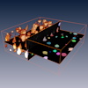
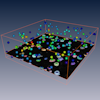
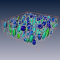

In biomedical imaging it is sometimes required to measure and quantify multiple objects such as cells, vesicles, or puncta. The network scripts on this page demonstrate how such an analysis can be performed. A tutorial explaining how these networks are generated is available here.
The data we show here are cell bodies of neurons from the rat cortex imaged with a confocal microscope. The data are kindly provided by Marcel Oberlaender and Bernd Sakmann, Max Planck Florida Institute.
The first network demonstartes how to get a binary segmentation of the cell bodies, separate clusters of cell bodies and label them individually. For binary segmentation the LocalThreshold module is employed. Separation and labeling is done with the WatershedSegmentation module.
 Labeled cells
Besides basic measurements of volume and position, the sample of cell bodies can be analysed with respect to local density. This requires the cell bodies be represented as a point cloud or Cluster. Using module ClusterDensity the local density of cells can be calculated for each node of the cluster and visualized false color coded.
 Cell density
With module ShapeAnalysis it is possible to extract shape parameters from the labeled regions. The extracted parameters are nicely visualized with ellipsoids using module TensorDisplay.
 Shape analysis
This network shows how to filter a spreadsheet object and how the filtered spreadsheet may be used to extract a filtered version of the label image. The result of the filter operation is viszualized with the surface recontruction of the filterd label image. Adjust the range of the histogram sliders shown in the Properties area and wait a little bit until the network has updated.